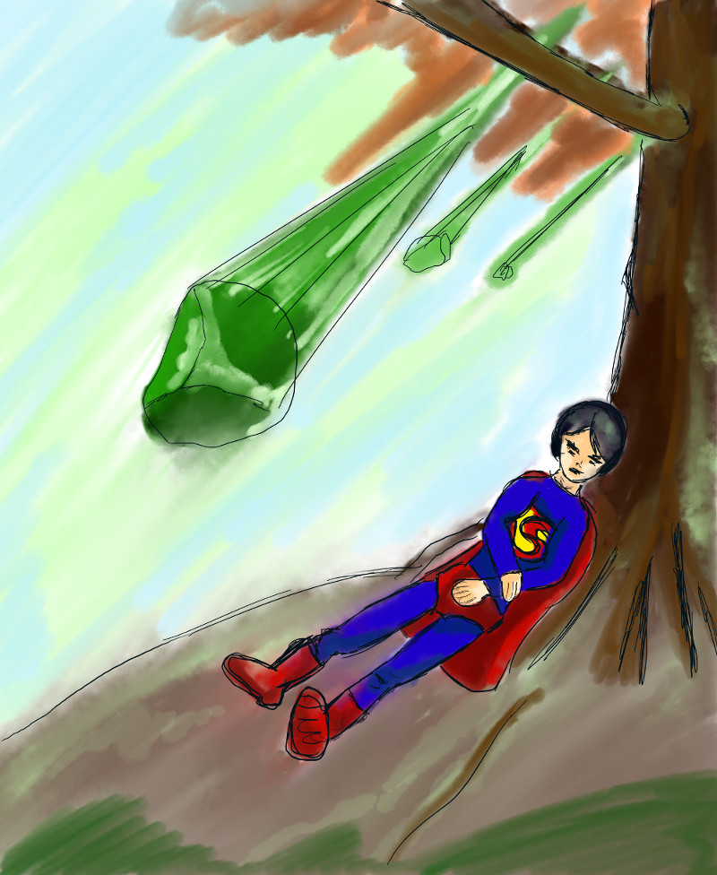

Inktober 2018 - J.15 : Faible
Plusieurs idées me sont passées par la tête pour traiter ce thème – un arbre et une fleur délicate confrontés à une tempête, un homme frêle soulevant un énorme rocher, etc – , mais elles me paraissaient toutes difficiles à réaliser. J’ai eu besoin de faire le point.
Ce défi ne me plaît pas. Je m’aperçois que c’est parce que je n’ai pas spécialement envie de dessiner. Je constate que, finalement, je ne progresse pas d’un dessin à l’autre et que je préfère toujours les dessins que j’ai recopiés à ceux que j’ai imaginés de toutes parts. Je n’ai donc pas très envie de dépenser beaucoup d’énergie pour fournir des efforts qui ne seront pas récompensés. J’ai préféré opter pour une image assez simple et parlante, sans donner trop de travail. Je sais que le résultat est médiocre, mais cela suffira.
Même si je ne suis pas emballée, je souhaite tout de même terminer ce défi. Peut-être que des idées ou des techniques me transporteront plus que d’autres d’ici la fin du mois.
On reconnaît malgré tout Superman ici, affaibli par une pluie de kryptonite.
